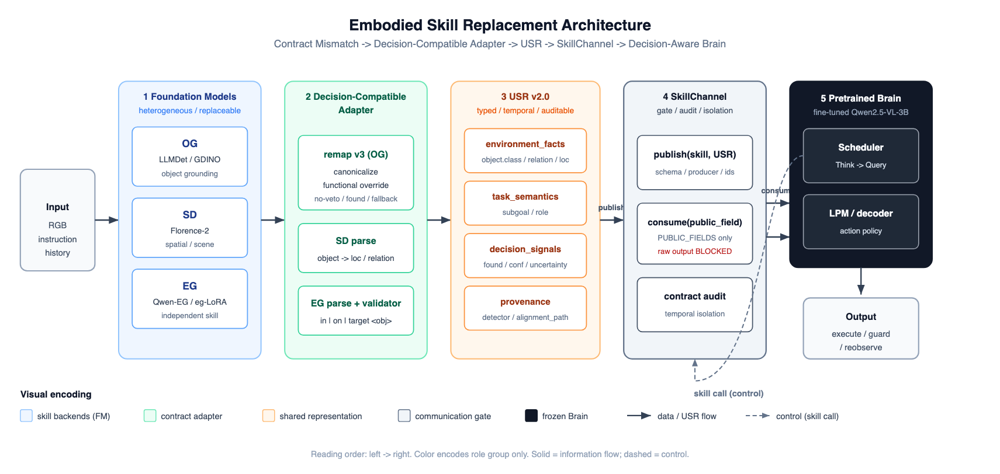

CVPR 2026 · frozen experimental snapshot
Contract Mismatch → Decision-Compatible Adapter → USR → SkillChannel → Decision-Aware Training
agenda
// 01 · problem
用 Grounding DINO / LLMDet 替换 RoboAgent 的 object grounding。检测可能成功，但标签词表 / 格式 / 语义 ≠ Brain 契约。
SR 34%（Native 78%）。大量失败是 lpm_error：检测到了，下游动作却错——典型合同失配。
① 多技能需要统一、可类型检查、可审计的通道
② Brain 要消费 found / confidence / uncertainty，不只是 class 名
agents/naive_detector.py
原始检测标签直通 Brain
agents/agent.py
Think→Query → skills → LPM
// 02 · main results
| Config | Meaning | SR | GCR |
|---|---|---|---|
| Native | RoboAgent native | 78% | 0.78 |
| Naive | GDINO 直接替换，无 adapter | 34% | 0.34 |
| Align | GDINO + Decision-Compatible Adapter | 80% | 0.80 |
| Align+USR | Align + USR Channel | 78% | 0.78 |
| FullIndep | OG + independent EG-LoRA + SD + USR | 80% | 0.80 |
// 02 · evidence
Align vs Naive，同 episode 配对。
b=23（Naive 败 Align 胜）
c=0（反向）
p ≈ 2.4e-7 < 0.001
0 regression · 23 recovered
35 例 × 5 信号态 = 175 probes。
只改 found/confidence/uncertainty。
决策准确率 172/175 = 98%
signal-sensitive 34/35
raw-FT 仅 40%，且 0/35 sensitive
canonical 48%
canonical+signals 61%
flat-USR 58%
shuffled-USR 28%
打乱信号就崩 → 学的是 signal→decision
// 03 · architecture
颜色只表示角色分组；实线 = 数据/USR；虚线 = skill call 控制回流。

// 03 · stage 1–2
OG LLMDet / GDINO
SD Florence-2
EG Qwen-EG / eg-LoRA
环境变量切后端：ROBOAGENT_DETECTORROBOAGENT_SD_BACKENDROBOAGENT_EG_BACKEND
detector_registry.py
florence2_sd.py
eg_lora_backend.py
remap v3：canonicalize · functional override · no-veto · found · fallback
把“检测成功但标签不对”修成 Brain 可消费合同。
34% → 80% 主要发生在这里。
og_remap_only.py · ground_remap_only
contract_adapter.py · adapt_label
skill_alignment.py · canonicalize_label
// 03 · stage 3–4
environment_factstask_semanticsdecision_signalsprovenance
OG→USR 与 remap v3 决策等价；SD/EG 也有 round-trip。
usr.py · make_usr / og_adapter_full
usr_og_backend.py · ground_usr
usr_sd_eg.py · SD/EG 解析
usr_reliability.py · schema sanitize
publish(skill, USR) 校验 schemaconsume(skill, public_field) 仅 whitelist
raw（bbox / det_query…）BLOCKED
机器可读 contract audit · 12/12
usr_channel.pySkillChannel.publish / consumePUBLIC_FIELDS / RAW_FIELDScontract_audit
// 03 · stage 5
Think→Query 协议，技能调用进入 ability_buffer，再分发到 OG/SD/EG/LPE/LPM。
agents/agent.pyget_core_result / get_ability_result
prompt_ebalf.py · prompt_ct
manipulation_planner 消费场景与技能结果，输出 execute / guard / reobserve。
DA-FT 让它对 USR 决策信号敏感（本仓可加载 ROBOAGENT_BRAIN_ADAPTER；训练脚本在实验机归档）。
prompt_ebalf.py · prompt_lpm
qwen.py · VLM inference
RESEARCH_BRAIN_DECISION_TRAINING.md
// 04 · code map
agents/naive_detector.py → agents/og_remap_only.py
一眼看清“直通标签”和“remap v3 合同对齐”差在哪。
agents/usr.py → agents/usr_channel.py
看四段 schema，再看 PUBLIC_FIELDS / raw block / audit。
agents/agent.py（get_ability_result）+ prompt_ebalf.py
Think→Query 如何把技能接到 LPM。
run_ebalf.py + agents/run_manifest.py
run_manifest.json / episode_manifest.jsonl → 表格与 McNemar。
// 05 · ablation
同一数据池 / split / 样本数 / epochs(4) / batch(6) / lr(2e-4) / 优化步数 / 初始化 / 评测集。
唯一差别：输入表征。
canonical 48% → +signals 61%
flat-USR 58% ≈ +signals
shuffled-USR 28% 崩盘
反事实 5 态：只有 +signals / flat-USR 达到 5/5
所以：不要把收益归因成“换成 USR 字符串格式”；归因成 显式 decision signals。
// 05 · findings
naive 34% → aligned 80%（+46pp）。主导失败模式：下游合同失配（检测成功、动作错误）。
canonical+signals 61% ≈ flat-USR 58%；shuffled 28% 证明学的是信号映射，不是序列化。
决策准确率 98%（172/175）vs raw-FT 40%；signal-sensitive 34/35。
// Q&A
Align 已 80%。USR 主证据在消融与 DA-FT，强调统一接口与可审计，不夸大 SR。
本仓 frozen 实验代码。DA-FT 见 RESEARCH_BRAIN_DECISION_TRAINING.md；全量权重/训练在实验机归档。
打开 usr_channel.py 的 PUBLIC_FIELDS / RAW_FIELDS / consume；合同测试 12/12。
S 演讲者视图 · T 主题 · ←→ 翻页 · F 全屏 · O 总览